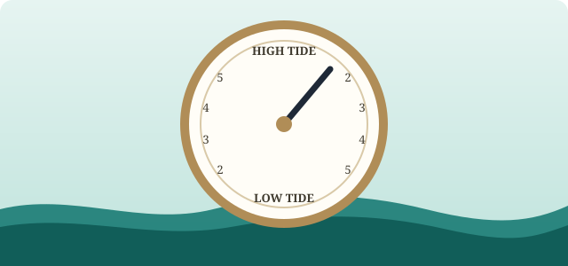

How Tidal Clocks Work
A tide clock looks like a wall clock that lost a hand. It has one pointer, and that pointer ignores the sun completely: it follows the moon. One full turn takes 12 hours and 25 minutes, the average time between two high tides.

Reading the dial
The dial is split in two halves. On the way down the left side the water is falling, on the way up the right side it is rising:
- Pointer at the top: high tide.
- Pointer at the bottom: low tide.
- Halfway on either side: the current runs fastest.
Why it drifts
The sun adds its own, smaller tide. A clock that assumes a fixed interval is right on average and wrong in detail:
| Moon phase | Tide type | Typical error |
|---|---|---|
| New or full | Spring | under 10 min |
| First quarter | Neap | up to 60 min |
| Last quarter | Neap | up to 60 min |
Set it on the spring tide and forgive it on the neap.
Doing the sum yourself
The pointer position is one line of arithmetic, built on a turn of 44714 seconds:
const TIDE_MS = 12.42 * 60 * 60 * 1000;
function pointerAngle(now, lastHighTide) {
const phase = ((now - lastHighTide) % TIDE_MS) / TIDE_MS;
return phase * 360; // 0 = high tide, 180 = low tide
}Tide clocks work best on coasts with two even tides a day, such as the Atlantic. Where the pattern is mixed, as on much of the Pacific coast, a printed tide table is still the better tool.